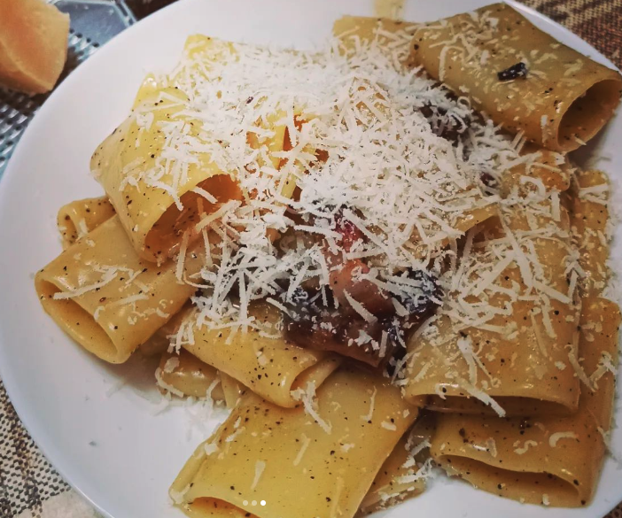

Carbonara

Ingredients
- Eggs
- Parmesan
- Pasta of your Choice, we used Pacceri here
- Guanciale
Method
- Fill a pot with cold water and put it on high heat
- Chop your Guanciale and cook in a pan on low heat, you want this Guanciale to release it's fat and crisp
over time.
- While the water and Guancialeare cooking, we move on to the egg mixture, in a bowl add 3 egg yolks and 1
whole egg along with a rain of Parmesan, touch of olive oil, salt and pepper and mix well, you want to see a
nice silky consistancy
- Check your Guanciale, see if you need to increase the heat for it to crisp up
- When the water starts to boil add a generous amount of salt and throw your pasta, cook al dente
- When the pasta is cooked you are going to throw it with the Guanciale along with some pasta water and
seasoning, keep cooking and mixing here and turn off the flame.
- Once the pan is not scrorthing hot, add the egg mixture and toss. Important that there is no heat as you
will end up with scrambled eggs!
- You will see a beautiful golden silky sauce, cover with more Parmesan, Black pepper and enjoy with a glass
or red wine!